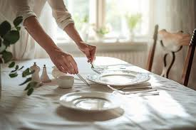
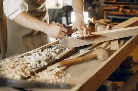
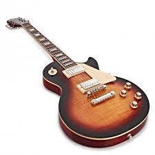

Mes passions / centres d'intérêt
Apprentissage du codage
Mes découvertes du codage, premiers pas et premières impressions
Jeux vidéos
Mon setup et mes jeux préférées
Cuisine
Mes recettes en photos
Travail du bois
La réalisation dont je suis fier
Musique
Mes guitares
Codage
J'ai commencé à coder pendant mes études à l'IUT de Troyes, en section GEII. Depuis je code quand je le peux pour automatiser au maximum mes actions au quotidien, dans des projets persos. J'aime comprendre comment les choses fonctionnent depuis tout petit, je regardais mon père démonter et réparer les choses à la maison. Je posais pleins de questions tout le temps, depuis c'est à moi que mon fils pose tout un tas de questions quand je code et bricole à la maison. De lui montrer que le code qui lui parrait encore abstrait peut intéragir et créer quelque chose de concret est iportant pour moi.
j'ai appris à l'université les langages Assembleur, C++ codage machine. Par la suite je suis passé sur de l'arduino, et raspberry pi. C'est simple mais le fait de faire clignoter des leds, de voir que le code permet parfois d'intéragir avec le monde réel ouvre beaucoup de perspectives. Apprendre tout seul à été gratifiant, les cours en ligne gratuit sont un excellent support, l'IA pour comprendre certains points précis est complémentaire. Je suis passé ensuite sur le HTML/CSS pour créer ces pages, c'est très intéressant, reste maintenant à approfondir ces codes et passer sur la partie JavaScript et PHP pour rendre ces pages dynamiques.
Jeux vidéos
J'ai commencé à jouer aux jeux vidéos très jeune, j'ai connu les premières consoles de jeux de salon (ce qui ne me rajeunit pas). Mais j'ai toujours garder cette culture dans un coin de mon esprit. Cela me permets de décompresser, de m'évader dans un autre univers, de vivre des aventures épiques. Ou simplement de me défouler dans des espaces avec des balles qui fusent dans tous les coins.
Mes styles préférés sont les MMORPG qui mêlent aventure avec un narratif mais qui reste totalement open world si on veut juste se changer les idées, les FPS Battlefield pour se défouler, un peu de RTS qui associe stratégie et économie.
Cuisine
La cuisine, un espace très important dans une famille. Là où je passe du temps avec mon fils. Je lui fait découvrir les aliments, la façon de les associer ensemble. Essayer de nouvelles recettes avec parfois des ratés, mais cela fait partie du jeu.
J'aime bien la cuisine du monde, les mélanges de saveur qu'elle apporte. Mon plus gros défi en cuisine a été la patisserie. C'est dans cet endroit que j'ai eu les plus gros fou rires avec mon fils, il veut toujours tout gouter. C'est également très satisfaisant quand on fait gouter notre cuisine à la famille ou les amis et que tout le monde se régale.
Travail du bois
Pour me détendre j'aime construire des meubles ou objets en bois, je commence par identifier le besoin et ensuite je passe au cahier des charges/contraintes, et enfin les plans avec études si besoin. Cela me permets de penser à rien d'autre que mon projet en cours. Avec la musique en fond je suis dans ma bulle.
J'ai commencer par fabriquer mon établi pour faire tout le bricolage. Puis je suis passé aux petits meubles comme une étagère sur mesure pour les fleurs. Mon plus gros défi a été de construire de A à Z un abri de piscine en ossature bois. Grosse construction, étude du PLU et DTU. Puis enfin conception des plans et assemblage final. Mise hors d'air et d'eau, et bardage. Et pour finir tirage de cable pour l'arivée électrique depuis ma maison, et installation de la lumière prises électriques pour le raccordement des éléments de la piscine.
Musique
Je me suis mis à la guitare sur le tard, cela me fait pratiquer l'agilité de mes doigts, et la concentration. Le résultat quand on y arrive est gratifiant, merci aux tutos sur youtube et autres sites remplis de bonnes pratiques.
J'ai débuté la guitare en 2023, j'apprends seul en jouant dans le salon. J'ai débuté par une guitatre acoustique, je suis ensuite assez rapidement passé sur une guitare électrique. Vu que je pratique seul sans prendre de cours j'avance petit à petit. Quand j'ai démarré cet instrument mon fils voulais toujours gratter les cordes avec moi, du coup je lui en ai acheté une pour lui aussi, comme ça il fait comme papa, comme il le dit si bien. J'ai commencé par apprendre quelques commptines pour les enfants, cela m'a permis de passer du temps avec mon fils tout en pratiquant cet instrument.